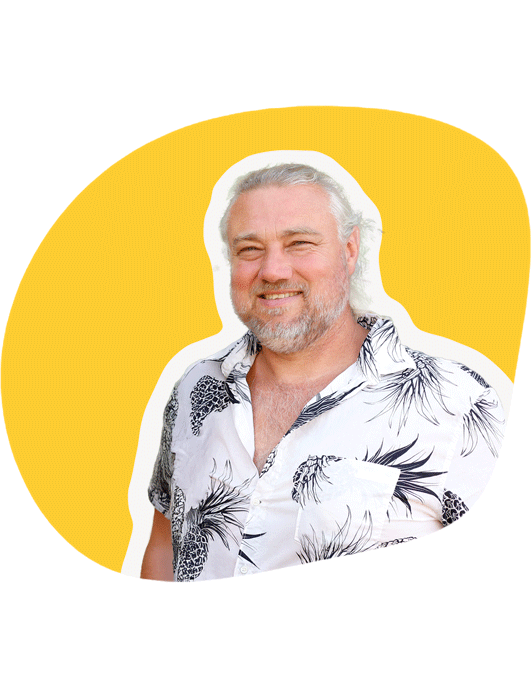
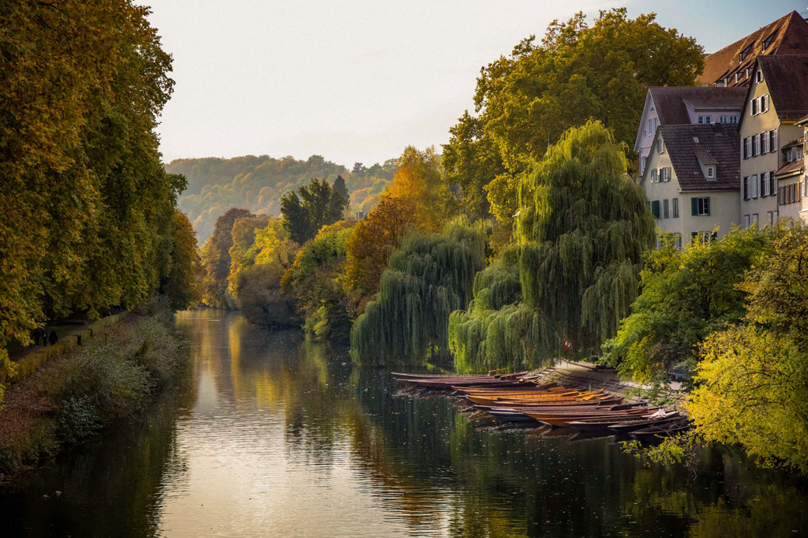
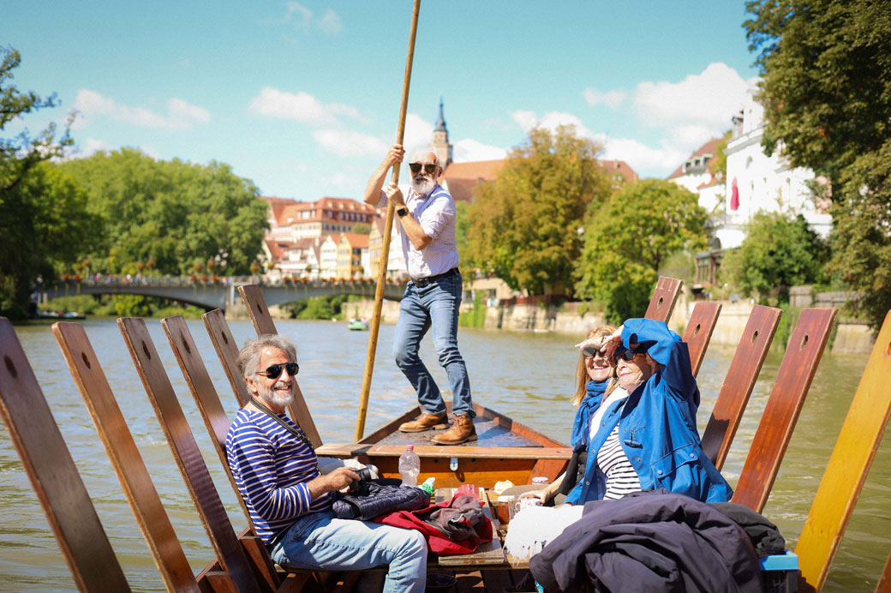
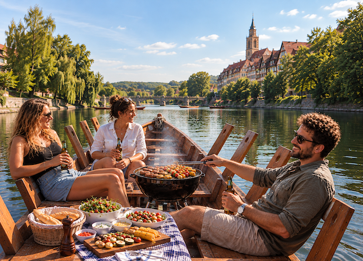

Mike's Stocherkahn
Experience Tübingen from
the Neckar!

On board with Mike
Hi, I'm Mike, your Stocherkahn driver in Tübingen.
With over 30 years of experience, I invite you to see Tübingen from the water – personal, relaxed and with heart.
I look forward to welcoming you and your group!
Our tours
Shared tours
Hop on spontaneously, no minimum number of guests required! For individuals or small groups.
- Adults: from €11 per person
- Teens / students: from €9 per person
- Children up to 12: from €7 per person
Hölderlinturm
Group tours
Exclusively for you and your group. Ideal for families, school classes or special occasions. Time and route by arrangement.
- Up to 26 people per Stocherkahn
- Several boats can be booked at the same time
- Flat rate from €90
Hölderlinturm, Casinospitze or by arrangement
BBQ tours
Enjoyment and relaxation on the water. Summer, water, the smell of the grill – this is how Tübingen tastes!
- Private tour with a barbecue on the Neckar
- We provide everything you need – food, grill, cutlery and good vibes
- Flat rate from €270 per group
Hölderlinturm, Casinospitze or by arrangement

Shared tours
Hop on spontaneously, no minimum number of guests required! For individuals or small groups.
- Adults: from €11 per person
- Teens / students: from €9 per person
- Children up to 12: from €7 per person
Hölderlinturm

Group tours
Exclusively for you and your group. Ideal for families, school classes or special occasions. Time and route by arrangement.
- Up to 26 people per Stocherkahn
- Several boats can be booked at the same time
- Flat rate from €90
Hölderlinturm, Casinospitze or by arrangement

BBQ tours
Enjoyment and relaxation on the water. Summer, water, the smell of the grill – this is how Tübingen tastes!
- Private tour with a barbecue on the Neckar
- We provide everything you need – food, grill, cutlery and good vibes
- Flat rate from €270 per group
Hölderlinturm, Casinospitze or by arrangement
City tours
Discover Tübingen's old town on a guided walking tour and see places
that stay hidden from the water. Stroll through historic lanes, past half-timbered houses and key landmarks, and
hear fascinating stories about the town – a perfect complement to a Stocherkahn ride.
Classic city tour, 1.5 hours: from €90 per group
Shorter tours available on request
If you're interested in a city tour, just mention it when you book and we'll gladly plan one for you!
Where do we start?
Our Stocherkahn tours start from various landing stages along the Neckar. Shared tours always start at the Hölderlinturm. For all other tours, the starting point can be arranged individually.
Find the right landing stage here:
Hölderlinturm
Casinospitze
Youth hostel
Other starting points are possible, for example at Hotel Domizil or at the Neckarmüller.
Contact
For questions of any kind or to book, feel free to call or get in touch via the contact form.
I look forward to your message and to welcoming you aboard on the Neckar soon!
0177 415 78 21s24k24@gmail.com
Good to know
How many people fit in a Stocherkahn?
How long does a tour take?
What happens if it rains?
Can I eat and drink on the boat?
When can I go?
Where does the Stocherkahn dock?
See also: Landing stages